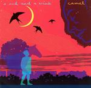

| Artist: | Camel |
| Title: | A Nod And A Wink |
| Label: | Camel Productions |
| Length(s): | 55 minutes |
| Year(s) of release: | 2002 |
| Month of review: | [11/2002] |
| 1) | A Nod And A Wink | 11.16 |
| 2) | Simple Pleasures | 5.31 |
| 3) | A Boy's Life | 7.20 |
| 4) | Fox Hill | 9.19 |
| 5) | The Miller's Tale | 3.34 |
| 6) | Squigely Fair | 8.02 |
| 7) | For Today | 10.40 |
With Simple Pleasures opens percussively, with bluesy guitar lines, all subdued. The blues is strongly present here. The vocal melodies are good, the guitar solo melody line is a bit Spanish, while LeBlanc inserts his tuney keyboards. A sad love song, with a lot of feeling in the guitar playing. Moody, moody.
On A Boy's Life we open with acoustic guitar. It is quite similar to Peter Hammill at his most mellow. After an instrumental intermezzo with plenty of keyboards, making the music more symphonic we return to a quiet folky tune with flute and acoustic guitar. Again, the music has a very rural, pastoral feel. Then a bit pace sets in again, with guitars strumming and the electric guitar doing the tuneful repetitive lead. The weakest track so far though.
With Fox Hill we move into danceable areas even, this is really a very merry, jolly track. Is this the tongue-in-cheek side of Caravan, and what is that reference to Matching Mole doing there? Through the bridge we end up in a pouncing instrumental middle part, where the music wants to fire, but does not yet seem to make it yet. Time for some meandering keyboard solo's then. A bit too merry this one, especially in the very up-beat middle. Some of the guitar parts are nice though. The song does pick up at the end, with some melodic flute and dito vocals.
The Miller's Tale has only a teeny bit of lyrics. Opening softly again with flute and acoustic guitar, it seems Camel is really in a soft folky mood on this album. Wordless female vocals, something akin a somber horn section, lead up to the longish instrumental Squigely Fair. Based on a strong guitar theme, this is an accessible thematic piece with plenty of room for everyone, the guitar however taking the lead. A Tull-like flute solo leads up to something a bit more tense with violin like sounds building it and the rhythm section following up. A bit of a Focus feel here as well. Hey there are some vocals here after all. They are simply not in the booklet (there isn't much though). The ending is a bit orchestral again. Either these guys are very good at fooling me, or they do really have a clarinet there. For Today is the moving closer of the album. It has a strong Floydian feel with sensitive guitar playing. LeBlanc's keyboards are just as sad in fact. The song ends with an anthemic choir and a guitar crying out. The train leaves.